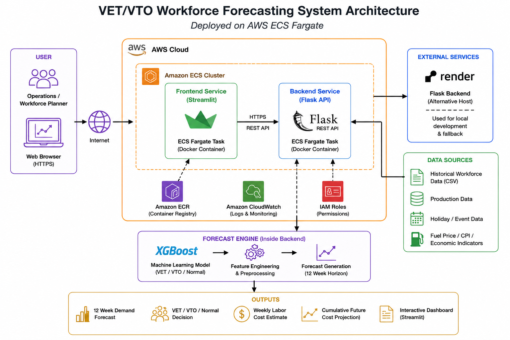

Portfolio Project by Wil Low / Draculess99
Autonomous & Multi-Agent AI Warehouse Workforce Forecasting
This project started on the warehouse floor. After two years as a fulfillment center dispatcher watching staffing decisions happen reactively — overtime called too late, VTO offered too early — I built a system to get ahead of it.
An advanced workforce planning system that forecasts weekly warehouse workload, recommends VET, VTO, or Normal staffing actions, evaluates risk and cost impact, and explains decisions through agentic AI and an autonomous supervisor workflow.
Wil Low / Draculess99 — VET/VTO Warehouse Forecasting, Workforce Analytics, Demand Forecasting, Agentic AI, Autonomous Supervision, and AI-Powered Labor Optimization.
Project Overview
This project upgrades a traditional VET/VTO workforce forecasting dashboard into a multi-agent decision intelligence system. Instead of only predicting weekly workload, the application routes forecast results through specialized AI workflow components for staffing recommendations, cost impact analysis, operational risk review, and executive decision summaries. The result is a warehouse labor planning system that can explain why VET, VTO, or Normal staffing is recommended — and connect those recommendations to business impact, risk, and operational readiness.
Project Highlights
- XGBoost-based weekly workload forecasting
- VET/VTO/Normal staffing recommendation logic
- Multi-agent decision workflow for forecast, staffing, cost, risk, and executive summary generation
- Autonomous supervisor layer that reviews node outputs and produces higher-level operational recommendations
- Shared operational state passed through the workflow to preserve forecast, staffing, memory, cost, and risk context
- Labor cost impact and potential staffing savings analysis
- Streamlit dashboard with Flask API backend architecture
- Docker containerization for frontend and backend services
- AWS ECS Fargate deployment evidence
- Portfolio-ready GitHub structure with README, screenshots, architecture notes, and workflow traces
Business Value
Warehouse labor planning is often reactive: managers respond to workload spikes, overtime pressure, and staffing gaps after they have already affected operations. This project demonstrates how forecasting, agentic AI, and autonomous workflow supervision can support earlier labor decisions by connecting demand prediction with staffing actions, cost impact, operational risk, and executive-level explanation. Instead of producing only a forecast, the system converts workload signals into VET, VTO, or Normal staffing recommendations that are easier for operations teams to review, explain, and act on.
Business Impact / Demonstration Run
The system forecasts labor demand and generates VET, VTO, or Normal staffing recommendations. A cost-impact model then estimates the potential labor cost implications of each staffing decision compared with a baseline staffing strategy.
Designed for live deployment; demonstration runs simulate warehouse conditions based on two years of dispatch operations experience.
Technical Architecture
The system combines machine learning forecasting, backend API services, dashboard visualization, and an autonomous multi-agent decision workflow. Forecast results are passed through specialized workflow nodes for staffing recommendation, cost impact analysis, risk review, memory/context handling, and executive summary generation.

Architecture diagram showing the Streamlit dashboard, Flask forecasting API, XGBoost model, staffing recommendation logic, cost impact layer, and agentic workflow components.
- Forecasting: Python, XGBoost, time-series features, baseline comparison
- Backend: Flask API for forecast and staffing recommendation logic
- Frontend: Streamlit dashboard for scenario planning and visualization
- Agentic Workflow: Forecast, staffing, cost, risk, memory, and executive summary nodes
- Autonomous Supervision: Supervisor layer reviews accumulated node outputs and generates higher-level recommendations
- Deployment: Docker, GitHub, Render/Railway, and AWS ECS Fargate deployment evidence